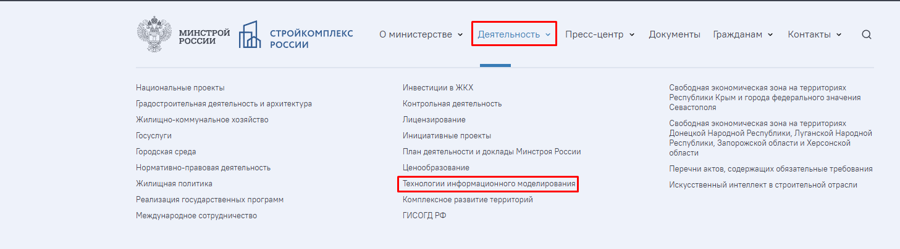
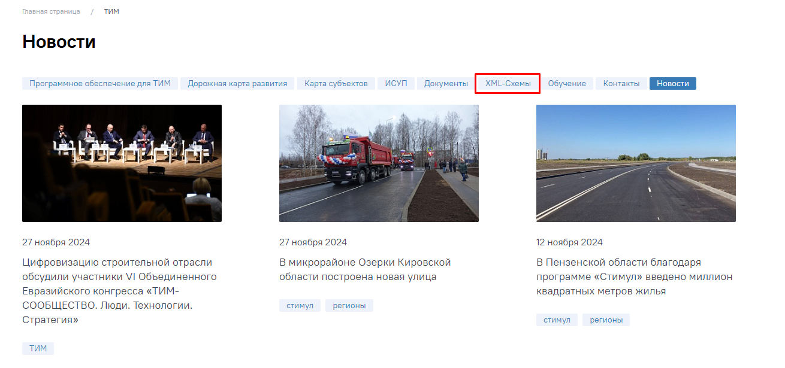
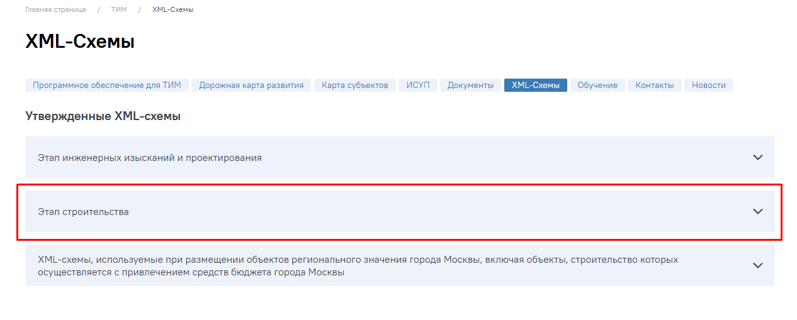

Что такое цифровая исполнительная документация
На этом завершающем курсе поговорим про ведение исполнительной документации в цифровом виде. На примере нескольких программ вы научитесь составлять комплект исполнительных документов в электронном виде и закрепите полученные знания в интерактивных тренажерах.
Начнем с небольшой теории.
Что такое цифровая исполнительная документация (ЦИД)
В действующем законодательстве определения цифровой исполнительной документации нет, как и нет разницы между терминами «цифровая ИД» и «электронная ИД».
Основываясь на определении исполнительной документации, можно сформулировать, что цифровая исполнительная документация - это комплект документов, отражающих фактическое исполнение проектных решений и фактическое положение объектов капитального строительства и их элементов в процессе строительства, реконструкции, капитального ремонта объектов капитального строительства, оформленный в электронном виде.
Ведение ЦИД стало возможным после вступления в силу приказа Минстроя России № 344/пр от 16.05.2023 «Об утверждении состава и порядка ведения исполнительной документации при строительстве, реконструкции, капитальном ремонте объектов капитального строительства». Приказ разрешает вести исполнительную документацию в электронном виде без дублирования на бумажном носителе.
Приказ Минстроя России № 344/пр от 16.05.2023 действует до 01.09.2029
ЦИД содержит тот же комплект документов, который содержит исполнительная документация на бумажном носителе. Отличие двух форм ведения ИД, в основном, в правилах формирования, ведения, передачи и хранения. Об этом и поговорим далее.
Какой порядок формирования ЦИД
Формат ЦИД
Цифровая исполнительная документация формируется и представляется файлами в формате xml на сайте Минстроя. Смотрите на скринах ниже, как перейти во вкладку с xml-схемами.



Опубликованные схемы вступают в действие через три месяца после публикации. После размещения новой xml схемы в течение трех месяцев со дня введения ее в действие обеспечивается доступ к xml-схеме, прекратившей свое действие.
Если на сайте Минстроя отсутствует xml-схема для нужного типа документов, тогда используются форматы:
- doc, docx, odt — для документов с текстовым содержанием, не включающим формулы;
- pdf — для документов с текстовым содержанием, в том числе включающих формулы и (или) графические изображения.
ЦИД подписывается:
- усиленной неквалифицированной ЭП
- усиленной квалифицированной ЭП
Количество подписантов аналогично бумажному процессу.
Общий журнал в электронной форме формируется и представляется в виде файлов в формате xml с возможностью выгрузки всего общего журнала в виде нередактируемых электронных документов с возможностью печати на листах формата А4.
Через записи в общем журнале должен быть обеспечен доступ к специальным журналам, в которых ведется учет выполнения работ
Если нужно внести изменения
Создайте новую версию записи, подписанную ЭЦП, при этом обеспечьте хранение всех изменений, а также пометок о причинах изменений на протяжении всего срока хранения общего журнала. История изменений записей в общем журнале хранится в течение срока хранения общего журнала. Не допускайте внесение в нее изменений или ее удаление.
Порядок передачи и хранения общего журнала определен в приказе Минстроя России от 02.12.2022 № 1026/пр.
Участники цифрового взаимодействия
Формирование и ведение ИД в электронном виде при строительстве ОКС осуществляются участниками цифрового взаимодействия на основании соответствующих договоров с застройщиком (техническим заказчиком), соглашения об электронном взаимодействии застройщика (технического заказчика) с ГСН.
При оформлении соглашения об электронном взаимодействии застройщика (технического заказчика) с ГСН формирование и ведение ИД на бумажных носителях не требуется.
Рекомендуемая форма соглашения об электронном взаимодействии застройщика (технического заказчика) с ГСН приведена в приложении Б ГОСТ Р 70108-2022
Смотрите ниже памятку, в которой перечислены все возможные участники электронного взаимодействия.
На этом вводном уроке вы ознакомились с определением цифровой исполнительной документации и с основными отличиями ЦИД от ведения ИД на бумажном носителе. В следующем уроке детально рассмотрите процесс формирования и ведения ЦИД и немного попрактикуетесь.
Примечание на 24.09.2026. Пункт 5 Порядка ведения ИД по приказу Минстроя № 344/пр изменён приказом № 369/пр с 01.03.2026. Перед применением изложенных здесь требований сверьте актуальную редакцию: приказ № 344/пр, изменение № 369/пр. Исходный учебный текст не изменён.
Примечание на 24.09.2026. Обозначение ГОСТ Р 70108-2022 в исходном уроке заменено на ГОСТ Р 70108-2025 по карточкам Росстандарта: старая редакция, новая редакция. Текст урока сохранён без изменения.
{kind=link}
{kind=link}
{kind=link}